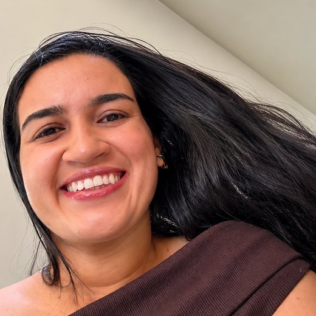

Francisca Soares
Mãe atípica
Como foi o caminho até o diagnóstico do seu filho?
O caminho até o diagnóstico do meu filho não foi fácil. Foram muitas dúvidas e observações. Ele começou a se desenvolver, mas depois apresentou algumas regressões. Na época da pandemia, muitas pessoas diziam que era por causa do uso das máscaras, mas meu coração de mãe sentia que tinha algo a mais. Então procurei ajuda profissional, passei por várias consultas e avaliações até chegar ao diagnóstico. Foi um momento difícil, mas eu sabia que precisava buscar o melhor para ele.
O que foi mais difícil no começo?
O mais difícil para mim foi aprender a lidar com as crises, entender o que meu filho queria e precisava, principalmente porque ele ainda não falava. Muitas vezes eu não sabia como ajudá-lo ou como entender o que estava sentindo. Foi um processo de muito aprendizado, paciência e, acima de tudo, amor.
Que ajuda fez, ou faria, diferença para vocês?
Com certeza, buscar ajuda de profissionais fez toda a diferença para nós. As terapias e o acompanhamento com neuropediatra foram muito importantes, pois me ajudaram a entender melhor meu filho, aprender a lidar com as crises e descobrir maneiras de estimular o desenvolvimento dele. Foi através dessas orientações que comecei a compreender melhor as necessidades do meu filho.
O que você diria para quem está começando esse caminho agora?
Eu diria para não desistir, seguir em frente e buscar ajuda de profissionais. Tenha paciência, respeite o tempo do seu filho e acredite no potencial dele. Cada criança tem seu próprio ritmo de desenvolvimento. Não perca a esperança, pois cada pequena conquista é uma grande vitória.
De que momento com seu filho você mais se orgulha?
O momento em que mais sinto orgulho do meu filho é quando vejo ele superando seus desafios, vencendo suas frustrações e conquistando coisas que antes pareciam tão difíceis. Cada evolução dele enche meu coração de alegria e me mostra o quanto ele é forte. Tenho muito orgulho de cada conquista do meu menino! ❤️
Entrevista publicada com autorização de Francisca Soares. O nome do filho foi omitido para proteger a criança.